ข้อมูลรายมณฑล
กรุงปักกิ่ง
เป็นเมืองหลวงของประเทศจีน เป็นศูนย์กลางทั้งด้านการปกครอง เศรษฐกิจ การคมนาคม และวัฒนธรรมของประเทศ โดยมีพื้นที่ทั้งหมด 16,410.54 ตารางกิโลเมตร มีชนชาติฮั่นเป็นประชากรส่วนใหญ่ มีประวัติศาสตร์ยาวนานกว่า 3,000 ปี
ข้อมูลรายมณฑล
มณฑลเหอหนาน
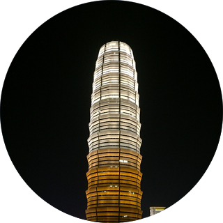มีที่ตั้งอยู่บริเวณตอนกลางส่วนล่างของแม่น้ำเหลือง เนื่องจากพื้นที่ส่วนใหญ่อยู่บริเวณแม่น้ำเหลืองตอนล่างจึงได้รับการขนานนามว่า "เหอหนาน" ซึ่งแปลเป็นภาษาจีนว่า "แม่น้ำทางตอนใต้" เป็นแหล่งทรัพยากรแร่ธาตุที่อุดมสมบูรณ์ที่สุดแห่งหนึ่งในโลก มีพื้นที่ทั้งหมด 167,000 ตารางกิโลเมตร
ข้อมูลรายมณฑล
มณฑลเฮยหลงเจียง
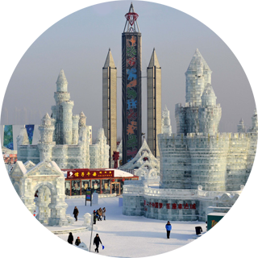เป็น 1 ใน 3 มณฑลที่ตั้งอยู่ทางภาคตะวันออกเฉียงเหนือ และตั้งอยู่ตอนเหนือสุดของประเทศจีน ทิศเหนือและทิศตะวันออกติดประเทศรัสเซีย (แนวพรมแดนยาว 3,045 กิโลเมตร) เป็นประตูสู่ “ยูเรเซีย”
ข้อมูลรายมณฑล
มณฑลหูเป่ย
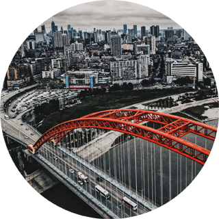มณฑลหูเป่ยมีชื่อย่อว่า เอ้อ(鄂) ตั้งอยู่ในภาคกลางของประเทศจีน มีทรัพยากรแร่ธาตุอุดมสมบูรณ์ มีการค้นพบทรัพยากรธรรมชาติถึง 136 ชนิด มีประชากรทั้งหมด 59.88 ล้านคน
ข้อมูลรายมณฑล
เขตปกครองตนเองซินเจียง
เขตการปกครองตนเองชนชาติอุยกูร์ซินเจียงตั้งอยู่ทางทิศตะวันตกเฉียงเหนือของประเทศจีน เป็นเขตที่มีพื้นที่ใหญ่ที่สุดในประเทศ วัฒนธรรมท้องถิ่นของซินเจียงยังมีภาษาและวรรณคดีของชาวอุยเกอร์ ที่เป็นภาษาที่ยังคงใช้อยู่จนถึงทุกวันนี้ ซึ่งภาษาท้องถิ่นนี้ยังปรากฏในบทกวี ดนตรีและการเต้นรำของชนชาติดังกล่าวในปัจจุบัน
ข้อมูลรายมณฑล
มณฑลเหอเป่ย
มณฑลเหอเป่ยตั้งอยู่ทางทิศเหนือของประเทศจีน ชื่อย่อคือ “จี้” ได้รับการขนานนามว่า “มณฑลที่อยู่เหนือแม่น้ำเหลือง”
ข้อมูลรายมณฑล
มณฑลชิงไห่
มณฑลชิงไห่ หรือมีความหมายเป็นภาษาไทยว่า "ทะเลสีเขียว" เป็นชื่อที่ตั้งขึ้นตามชื่อทะเลสาบน้ำเค็มฉาร์ฮั่น (Qarhan) ซึ่งเป็นทะเลสาบน้ำเค็มที่ใหญ่ที่สุดในประเทศจีนและใหญ่ที่สุดในโลก ภูมิประเทศโดยทั่วไปเป็นภูเขาและหุบเขา มีที่ราบแอ่งกะทะอยู่ตอนกลางของมณฑลคือ ที่ราบแอ่งกะทะไฉต๋ามู่ (Qaidamu)
ข้อมูลรายมณฑล
มณฑลเหลียวหนิง
มณฑลเหลียวหนิงมีชื่อย่อว่า "เหลียว" ตั้งอยู่ทางทิศตะวันออกเฉียงเหนือของประเทศจีน มีแหล่งทรัพยากรพลังงาน ได้แก่ ปิโตรเลียม ก๊าซธรรมชาติ ถ่านหิน และยูเรเนียม
ข้อมูลรายมณฑล
เขตปกครองตนเองมองโกเลียใน
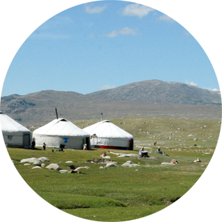ตั้งอยู่ทางตอนเหนือของประเทศจีน มีพื้นที่ทั้งหมด 1,183,000 ตารางกิโลเมตร โดยคิดเป็นสัดส่วนร้อยละ 12.3 ของพื้นที่รวมทั้งประเทศ ตั้งอยู่ห่างจากมหาสมุทร พื้นที่ส่วนใหญ่เป็นที่ราบสูงกว้างใหญ่
ข้อมูลรายมณฑล
มณฑลจี๋หลิน
ชื่อของมณฑลจี๋หลินมีความหมายว่า "เมืองอันอุมดมสมบูรณ์ด้วยป่าไม้" ตั้งอยู่ทางภาคตะวันออกเฉียงเหนือของประเทศจีน ได้รับการสมญานามว่า “พื้นที่ดินดำ” มีทรัพยากรดินที่อุดมสมบูรณ์ด้วยแร่ธาตุ เหมาะสำหรับการเพาะปลูก
ข้อมูลรายมณฑล
นครเทียนจิน
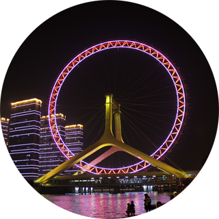นครเทียนจินตั้งอยู่บริเวณตะวันออกเฉียงเหนือของที่ราบภาคเหนือของจีน เทียนจินห่างจากปักกิ่ง 120 กิโลเมตร ตั้งอยู่บริเวณสองฝั่งของแม่น้ำไห่เหอ ซึ่งเป็นแม่น้ำที่ใหญ่ที่สุดของประเทศจีนทางตอนเหนือ มีสาขากว่า 300 สายแต่ละสายมีความยาวกว่า 10 กิโลเมตร
ข้อมูลรายมณฑล
มณฑลซานซี
มณฑลซานซีตั้งอยู่ทางทิศเหนือของประเทศจีน มีพื้นที่ทั้งหมด156,579 ตร.กม. คิดเป็น 1.6 % ของพื้นที่ทั้งหมด มีภูมิประเทศที่หลากหลาย ประกอบด้วยภูเขา เนินเขา ที่ราบสูง และที่ราบลุ่มโดยมีพื้นที่ที่เป็นภูเขามากกว่า 80 % ของพื้นที่ทั้งหมด
ข้อมูลรายมณฑล
เขตปกครองตนเองทิเบต
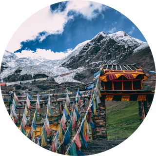เขตปกครองตนเองทิเบตตั้งอยู่ทางทิศตะวันตกเฉียงใต้ของประเทศจีน เขตการปกครองตนเองทิเบตตั้งอยู่บนที่ราบสูงชิงไห่-ทิเบต ซึ่งพื้นที่ดังกล่าวได้รับการขนานนามว่าเป็น “หลังคาโลก” เขตปกครองตนเองทิเบตมีภูมิอากาศที่หลากหลายและได้รับการขนานนามว่า "เมืองที่ไม่มีฤดูกาล แต่ฤดูกาลทั้งสี่จะเกิดขึ้นได้ในวันเดียว”
ข้อมูลรายมณฑล
มณฑลกวางตุ้ง
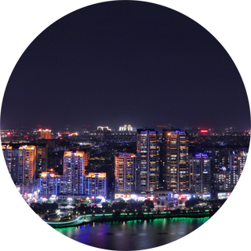มณฑลกวางตุ้งหรือมณฑลกว่างตง (广东省) มีชื่อย่อว่า เยี่ยว์ (粤, Yue) ตั้งอยู่ทางแนวชายฝั่งทะเลตอนใต้ของจีน มีพื้นที่ 179,812.7 ตร.กม. มีขนาดใหญ่เป็นอันดับที่ 15 ของประเทศจีน ในปี 2555 มีประชากร 105.94 ล้านคน เป็นมณฑลที่มีประชากรมากเป็นอันดับ 1 ของประเทศจีน
ข้อมูลรายมณฑล
มณฑลไห่หนาน
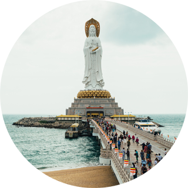มณฑลไห่หนานหรือมณฑลไหหลำ (海南省) ตั้งอยู่ทางตอนใต้สุดของจีนล้อมรอบด้วยทะเลจีนใต้ เดิมเคยเป็นส่วนหนึ่งของมณฑลกวางตุ้ง ซึ่งต่อมาได้ยกระดับขึ้นเป็นมณฑลและประกาศเป็นเขตเศรษฐกิจพิเศษในปี 2531 และเป็นเขตเศรษฐกิจพิเศษของจีนที่มีขนาดพื้นที่ใหญ่ที่สุด
ข้อมูลรายมณฑล
มณฑลยูนนาน
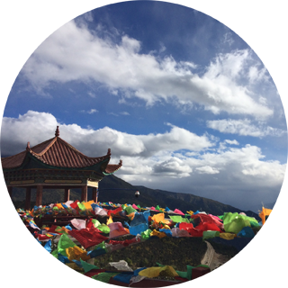มณฑลยูนนาน หรือที่คนจีนเรียกสั้น ๆ ว่า “เตียน” (Dian) ซึ่งเป็นชื่อของทะเสสาบในนครคุนหมิง ตั้งอยู่ทางภาคตะวันตกเฉียงใต้ของจีน เป็นมณฑลเขตชั้นในที่ไม่มีทางออกทะเล
ข้อมูลรายมณฑล
มณฑลกุ้ยโจว
มณฑลกุ้ยโจวตั้งอยู่ทางภาคตะวันตกเฉียงใต้ของสาธารณรัฐประชาชนจีน เป็นมณฑลเขตชั้นในที่ไม่มีทางออกทะเล อยู่ที่ราบสูงหยูนกุ้ย (Yungui) ได้ชื่อว่า เป็นแหล่งไฟฟ้าพลังน้ำของประเทศ เนื่องจากแม่น้ำอู่เจียง (Wujiang) ไหลผ่านทั่วทั้งมณฑล
ข้อมูลรายมณฑล
มณฑลหูหนาน
มณฑลหูหนาน (Hunan) หรือที่เรียกกันว่า “เซียง” (Xiang) ตั้งอยู่ทางตอนกลางของภาคใต้ของสาธารณรัฐประชาชนจีน มีปริมาณน้ำจืดมากเป็นอันดับ 2 ของจีน เนื่องจากมีทะเลสาบต้งถิง (Dongting Lake) ซึ่งเป็นทะเลสาบน้ำจืดที่ใหญ่เป็นอันดับ 2 ของจีน ซึ่งเป็นที่มาของชื่อมณฑล “หูหนาน” ที่แปลว่า “ทิศใต้ของทะเลสาบ” และได้สมญานามว่าเป็น “แหล่งผลิตข้าวและปลาน้ำจืดรายใหญ่ของจีน”
ข้อมูลรายมณฑล
นครเซี่ยงไฮ้

เซี่ยงไฮ้มีพื้นที่ประมาณ 6,340.5 ตร.กม. คิดเป็นสัดส่วนร้อยละ 0.06 ของพื้นที่ทั้งประเทศ ผลจากการที่ประเทศตะวันตก เข้ามาเช่าพื้นที่หลายแห่งทำให้ เซี่ยงไฮ้กลายเป็นเมืองท่าการค้านานาชาติที่สำคัญ อีกทั้งอาคารและสถาปัตยกรรมต่างๆ ของนครเซี่ยงไฮ้ได้รับอิทธิพลจากรูปแบบตะวันตก และมีลวดลายสวยงามตามแบบยุโรป จนได้รับการขนานนามว่าเป็น “นครปารีสแห่งตะวันออก” ในปัจจุบัน
ข้อมูลรายมณฑล
มณฑลอานฮุย
มณฑลอานฮุยตั้งอยู่บนพื้นที่เขตทิศตะวันออกของประเทศจีน มีพื้นที่รวมทั้งสิ้น 139,600 ตารางกิโลเมตร มีจำนวนประชากรประมาณ 69.020 ล้านคน โดยได้ชื่อว่าเป็นมณฑลที่มีความยากจนที่สุดในภาคตะวันออกของจีน ด้วยเหตุนี้จึงมีแรงงานไหลออกจากมณฑลอานฮุยไปทำงานที่มณฑลใกล้เคียง เช่น งานก่อสร้าง และงานที่ใช้แรงงานอื่นๆ เป็นต้น
ข้อมูลรายมณฑล
มณฑลเจ้อเจียง
ตั้งอยู่ทางชายฝั่งทะเลทางตะวันออกเฉียงใต้ของจีนและทางใต้ของสามเหลี่ยมแม่น้ำฉางเจียง มีพื้นที่ทั้งหมด 101,800 ตารางกิโลเมตร มณฑลเจ้อเจียงมีชายฝั่งทะเลที่ยาวที่สุดในประเทศ 6,486 กิโลเมตร และเป็นมณฑลที่มีเกาะมากที่สุดในประเทศ มีพื้นที่สามารถเพาะพันธุ์สัตว์ทะเลน้ำตื้นได้กว่า 400 ตารางกิโลเมตร
ข้อมูลรายมณฑล
มณฑลเจียงซู
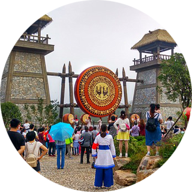มณฑลเจียงซู ตั้งอยู่ทางชายฝั่งทะเลทางตะวันออกของจีน มีพื้นที่ทั้งหมด 102,600 ตารางกิโลเมตร มีขนาดเท่ากับร้อยละ 1.06 ของประเทศจีน ขึ้นชื่อว่าเป็นดินแดนแห่งข้าวและปลา หมายถึงเป็นดินแดนที่มีความอุดมสมบูรณ์ ทั้งยังมีชื่อเสียงในการผลิตน้ำมันพืช ฝ้าย ผ้าไหม และการประมง มณฑลเจียงซูมีพื้นที่แหล่งน้ำจืดมากเป็นอันดับหนึ่งของประเทศจีน
ข้อมูลรายมณฑล
มณฑลเสฉวน
ตั้งอยู่ทางตะวันตกเฉียงใต้ของจีน มีพื้นที่ทั้งสิ้น 485,000 ตารางกิโลเมตร เป็นหนึ่งในพื้นที่เกษตรกรรมที่สำคัญของจีนในด้านตะวันตกของมณฑล ซึ่งเป็นที่สูงมีลักษณะอากาศเป็นแบบที่ราบสูง (plateau climate) ความชื้นและปริมาณน้ำฝนต่ำ อากาศเย็นในฤดูหนาว
ข้อมูลรายมณฑล
นครฉงชิ่ง
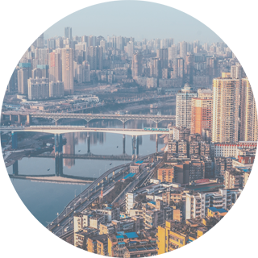ตั้งอยู่ทางตะวันตกเฉียงใต้ของประเทศ มีพื้นที่ทั้งสิ้น 82,402 ตารางกิโลเมตร ลักษณะเป็นพื้นที่สูง ภูมิประเทศเป็นเนินเขาและภูเขาเป็นหลัก สำหรับที่ตั้งของมหานครฉงชิ่ง จัดเป็นบริเวณสำคัญสำหรับรัฐบาลจีนในการดำเนินแผนการ “Great West Development”
ข้อมูลรายมณฑล
มณฑลฝูเจี้ยน
มณฑลฝูเจี้ยน ตั้งอยู่ทางทิศตะวันออกเฉียงใต้ของประเทศจีน ตรงข้ามเกาะไต้หวัน มีพื้นที่ใหญ่เป็นอันดับ 23 ของประเทศ ในช่วงไม่กี่ปีที่ผ่านมา มณฑลฝูเจี้ยนได้ก้าวสู่การเป็นเขตพัฒนาเศรษฐกิจที่สำคัญ โดยมีกุญแจสำคัญอยู่ที่ไต้หวัน ซึ่งตั้งอยู่ห่างจากมณฑลฝูเจี้ยนเพียง 125-160 กม.
ข้อมูลรายมณฑล
มณฑลเจียงซี
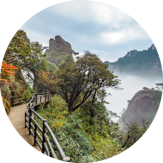มีเนื้อที่ทั้งหมด 166,947 ตร.กม. มีทะเลสาบผอ-หยาง (鄱阳湖) เป็นจุดศูนย์รวมทางระบบนิเวศวิทยาแหล่งใหญ่ที่สุดของมณฑล ที่สำคัญยังเป็นแหล่งแร่ทองแดงที่ใหญ่สุดในเอเชีย รวมทั้งเป็นแหล่งหลอมแร่ทองแดงที่ใหญ่สุดในประเทศ
ข้อมูลรายมณฑล
มณฑลส่านซี
ชื่อย่อมณฑล “ส่าน” หรือ “ฉิน” ตั้งอยู่ภาคตะวันตกเฉียงเหนือของประเทศจีน ปี 2559 มณฑลส่านซีมีประชากรทั้งหมด 38.12 ล้านคน มณฑลส่านซียังเป็นจุด “ต้า ตี้ หยวน เตี่ยน” หรือ จุดศูนย์กลางแผ่นดินของประเทศจีนซึ่งอยู่ที่ตำบลหย่งเล่อ อำเภอจิ่งหยัง เมืองเสียนหยาง
ข้อมูลรายมณฑล
มณฑลกานซู
ตั้งอยู่ทางภาคตะวันตกเฉียงเหนือของประเทศจีน มีพื้นที่ประมาณ 454,000 ตารางกิโลเมตร สถิติจากสำนักงานสำรวจประชากรมณฑลกานซู ปี 2560 มณฑลกานซูมีประชากรรวม 26.09 ล้านคน แบ่งเป็นชนชาติฮั่น ร้อยละ 90.6 และชนกลุ่มน้อยอื่นๆ ร้อยละ 9.4
ข้อมูลรายมณฑล
เขตปกครองตนเองหนิงเซี่ยหุย
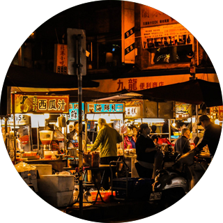ตั้งอยู่ในภาคตะวันตกเฉียงเหนือของจีน ตอนบนของแม่น้ำฮวงโห พื้นที่ของเขตฯ หนิงเซี่ยหุยมีลักษณะแคบและยาว มีขนาดพื้นที่ 66,400 ตารางกิโลเมตร มีแสงแดดเฉลี่ยต่อปี 3,000 ชั่วโมง ซึ่งถือว่าเป็นหนึ่งในพื้นที่ที่ได้รับแสงอาทิตย์มากที่สุดในประเทศจีน และมีพายุทรายมาก จึงสามารถนำพลังงานแสงอาทิตย์และพลังงานลมมาใช้ในอุตสาหกรรมผลิตไฟฟ้า
ข้อมูลรายมณฑล
เขตปกครองตนเองกว่างซีจ้วง
ตั้งอยู่ทางทิศตะวันตกเฉียงใต้ของประเทศจีน ใหญ่เป็นอันดับที่ 9 ของประเทศจีน (คิดเป็นสัดส่วน 2.5% ของทั้งประเทศ) เป็นแหล่งผลิตผลิตภัณฑ์ทางทะเลที่สำคัญแห่งหนึ่งของประเทศจีน นอกจากนี้ กว่างซียังเป็นแหล่งผลิตน้ำตาลที่สำคัญของจีน โดยมีผลผลิตประมาณ 1 ใน 3 ของทั้งประเทศ
ข้อมูลรายมณฑล
มณฑลซานตง
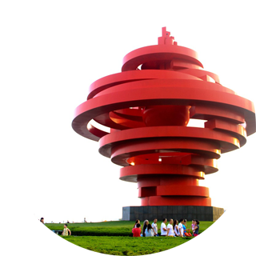มณฑลซานตงเป็นมณฑลชายฝั่งทะเลทางภาคตะวันออกของประเทศจีน จากภูมิประเทศที่เป็นคาบสมุทร ได้แยกอ่าวป่อไห่และทะเลเหลืองออกจากกัน มีพื้นที่ทั้งหมด 156,700 ตารางกิโลเมตร คิดเป็นร้อยละ 1.6 ของพื้นที่ทั้งประเทศ
ข้อมูลรายมณฑล
เขตบริหารพิเศษฮ่องกง
อยู่ทางตะวันออกเฉียงใต้ของจีน ประกอบด้วยเกาะฮ่องกง คาบสมุทรเกาลูน และดินแดนที่เรียกว่า New Territories (ซึ่งเป็นส่วนที่ติดกับชายแดนจีน) รวมถึงเกาะเล็ก ๆ อีก 235 เกาะ โดยเกาะที่ใหญ่ที่สุด คือ เกาะลันเตา
ข้อมูลรายมณฑล
เขตบริหารพิเศษมาเก๊า
ตั้งอยู่บริเวณชายฝั่งทางตะวันออกของจีน และอยู่ทางตะวันตกของพื้นที่สามเหลี่ยมปากแม่น้ำเพิร์ล (PRD) โดยมีพรมแดนติดกับมณฑลกวางตุ้ง มาเก๊ามีพื้นที่ 29.9 ตารางกิโลเมตร